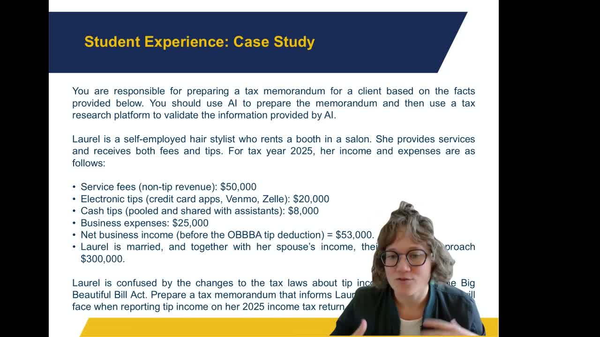

Using AI for Tax Research and Learning to Validate Its Responses
Training accounting students to use AI for tax research prompts and then verify AI output against professional tax research software.
Presented by Landi Morris, Assistant Professor of Accounting, College of Business, NAU
About This Project
Despite growing evidence that AI is reshaping accounting practice, Landi Morris found that most of her students were not using AI regularly and had little framework for doing so critically. An informal survey before the project revealed that only one of 45 students in a prior class used AI on a regular basis. Meanwhile, real-world cases showed professionals suffering consequences when they relied on AI-generated tax advice without independent verification. Morris designed a semester-long sequence to address both gaps: building fluency with AI tools and building habits of validation.
The course began with a baseline survey to document student AI use and attitudes, then integrated weekly AI engagement assignments throughout the fall 2025 semester. Students practiced prompt engineering through progressively more demanding tasks, from simple brainstorming to structured tax research questions. Morris demonstrated AI limitations directly by sharing a conversation with Gemini in which the model falsely claimed that recently enacted legislation was fictional. The capstone was a case study in which students used AI to draft a tax memorandum for a client, then verified every claim using professional tax research software. A post-semester survey documented shifts in how students used and validated AI, with most reporting greater confidence in applying AI purposefully rather than uncritically.
Project Highlights

